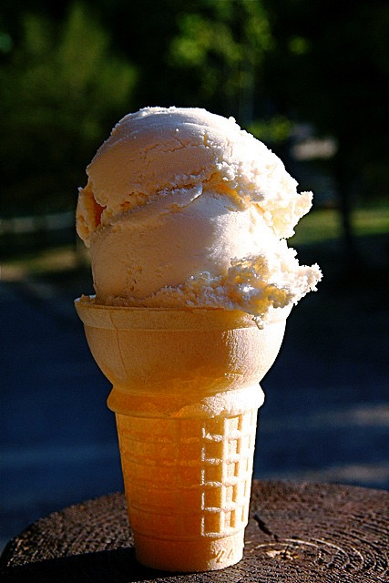
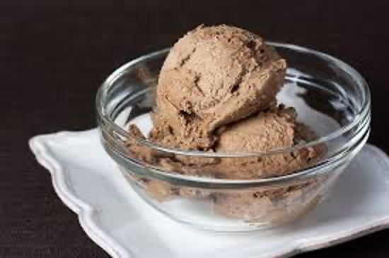

Homemade Vanilla Ice Cream
Ingredients
- 1½ cups heavy cream
- 1½ cups whole milk
- ⅔ cup cane sugar
- 2 teaspoons vanilla extract
- ⅛ teaspoon sea salt
Instructions
- In a medium saucepan, combine cream, milk, sugar, vanilla, and salt.
- Warm over medium-low heat, whisking often, for 5 minutes until sugar dissolves.
- Chill mixture for at least 2 hours or overnight.
- Churn in an ice cream maker according to manufacturer’s instructions.
- Freeze for 2 to 4 hours for firmer texture.

Rich Chocolate Ice Cream
Ingredients
- 4 oz dark chocolate, chopped
- 2 oz milk chocolate, chopped
- 2 cups whole milk
- 1 cup heavy cream
- ¾ cup granulated sugar
- ¼ cup sweetened condensed milk
- 3 tbsp Dutch-process cocoa powder
Instructions
- Melt chocolates over a double boiler.
- Heat milk, cream, sugar, condensed milk, and cocoa powder until smooth.
- Combine chocolate with hot dairy mixture.
- Chill the mixture for at least 4 hours or overnight.
- Churn in an ice cream maker and freeze until firm.